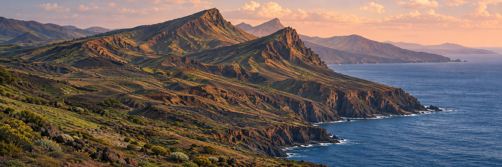

Canarias
EN PREPARACIÓNIN PREPARATION
AYAREA · VIAJES DE AUTORAYAREA · AUTHOR-LED JOURNEYS
Glastonbury es el primero de una serie de viajes concebidos para ir más allá de conocer un lugar. El paisaje, la historia y el encuentro con otras personas abren espacio para observarse, conversar y volver con algo que pueda integrarse en la vida cotidiana.Glastonbury is the first in a series of journeys designed to go beyond seeing a place. Landscape, history and time with others create room to reflect, talk and return with something to carry into everyday life.
La propuesta reúne la orientación de un guía nativo durante tres días y un acompañamiento de psico-coaching. El itinerario se está definiendo junto al equipo local; compartiremos los detalles cuando estén confirmados.The journey brings together three days with a native guide and psycho-coaching accompaniment. The itinerary is being shaped with the local team; we’ll share details once confirmed.
CINCO DÍAS · CUATRO NOCHESFIVE DAYS · FOUR NIGHTS
Un lugar para caminar, escuchar y descubrir su historia viva y dimensión simbólica junto a un guía nativo.Time to walk, listen and discover its living history and symbolic dimension with a native guide.
Espacios de psico-coaching para la reflexión, la integración y la acción, en un grupo reducido.Psycho-coaching spaces for reflection, integration and action in a small group.
Habitación individual y desayuno, almuerzo y cena durante la experiencia.A single room, with breakfast, lunch and dinner throughout the experience.
Ruta prevista: Tenerife Sur (TFS) – Bristol. Fechas, vuelos y detalles logísticos por confirmar.Planned route: Tenerife South (TFS) – Bristol. Dates, flights and logistics to be confirmed.
TAMBIÉN PARA EQUIPOSALSO FOR TEAMS
AYAREA crea experiencias para grupos de trabajo de alto rendimiento que quieren detenerse, escucharse y recuperar una dirección compartida. El formato y los objetivos se diseñan con cada equipo.AYAREA creates experiences for high-performing teams that want to pause, listen and find a shared direction. The format and goals are shaped with each team.
Conversar sobre una experiencia para equiposTalk about a team experienceANTES DE ESCRIBIRNOSBEFORE YOU WRITE
Habrá una salida en primavera y otra en otoño de 2027. Las fechas exactas están por confirmar.There will be a spring and an autumn departure in 2027. Exact dates are to be confirmed.
Nos permite enviarte información cuando fechas, precio e itinerario estén confirmados. No es una reserva y no requiere pago.It lets us send you information once the dates, price and itinerary are confirmed. It is not a booking and requires no payment.
La propuesta prevista es de cinco días y cuatro noches en habitación individual, con desayuno, almuerzo y cena, guía nativo durante tres días y acompañamiento de psico-coaching. Los detalles finales están en preparación.The planned experience is five days and four nights in a single room, with breakfast, lunch and dinner, a native guide for three days and psycho-coaching accompaniment. Final details are being prepared.
El grupo tendrá un máximo de 20 personas.Each group will have a maximum of 20 guests.
GLASTONBURY · 2027GLASTONBURY · 2027
Escríbenos a hi@ayarea.com. Fechas y precio por confirmar. Sin reserva ni pago.Email us at hi@ayarea.com. Dates and price to be confirmed. No booking or payment.